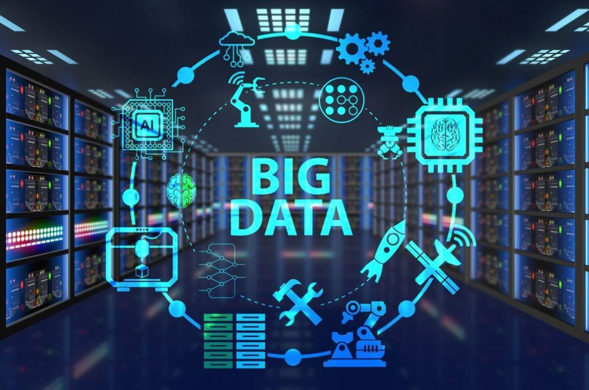

Programação

Programação é a arte de criar programas de computador que realizam tarefas específicas. Para isso, é preciso usar linguagens de programação, que são formas de se comunicar com as máquinas. A programação é essencial para o desenvolvimento de tecnologias que facilitam a vida das pessoas e transformam o mundo digital.
#codenewbie
Inteligência Artificial

Inteligência artificial é a capacidade de criar dispositivos e programas que simulam o comportamento e o raciocínio humano. Para isso, eles usam grandes volumes de dados e algoritmos que buscam padrões e soluções. A inteligência artificial pode ser aplicada em diversas áreas, como saúde, educação, segurança e entretenimento.
#maquina
Big Data
Big data é uma tecnologia que permite coletar, armazenar e analisar grandes volumes de dados de diferentes fontes e formatos, com alta velocidade e variedade. O objetivo do big data é extrair valor e insights desses dados, que podem ser usados para apoiar a tomada de decisões, a inovação, a eficiência e a competitividade nos negócios.
#ciênciadedados
Segurança da Informação

Segurança da informação é um conjunto de ações e estratégias para proteger dados e informações sigilosas de possíveis violações ou ataques. A segurança da informação visa garantir a confidencialidade, a disponibilidade, a autenticidade, a integridade e a legalidade dos dados, tanto em ambientes corporativos quanto pessoais.
#cibersegurança